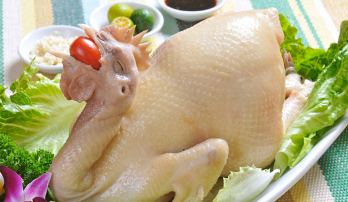

文昌鸡是在文昌特定的自然环境条件下，长期选育饲养而成的，育肥性能好，脂肪沉积能力 强，母鸡饲养6个月，公鸡饲养8个月，体重可分别达到1—1.3千克和1.5—1.8千克。具有较高 的屠宰率。
海南文昌鸡是中国优质家禽品种之一，追溯历史已有400多年之久。清代中期（1600—17 00）由福建、粤东地区移民带入,并落户文昌，在文昌特定的自然环境条件下，经群众长期选育 饲养而形成，具有身材娇小，毛色光泽，皮薄肉嫩，骨酥皮脆的优点。
2004年，文昌鸡年出栏量达到334万只，同比增长35.1%。现特别是文昌鸡成功获得国家 原产地标记注册，为打造文昌鸡品牌奠定了良好的基础。

现代化的文昌鸡集约化养殖，虽然没有那么多榕树籽可喂，却也是十分讲究。须于山场树林 之中放养，给它一个空间，让它自由活动，让文昌鸡采食到充足的野果以及螺、虫、蜢等动物蛋 白，一早一晚，还得喂养小量大米，糠和番薯之类的农作物。放养月6个月后，鸡以可食不过且 慢，宰杀之前，还需将鸡置于安静避光处，不宜让其随便走动，连续育肥30天以上。